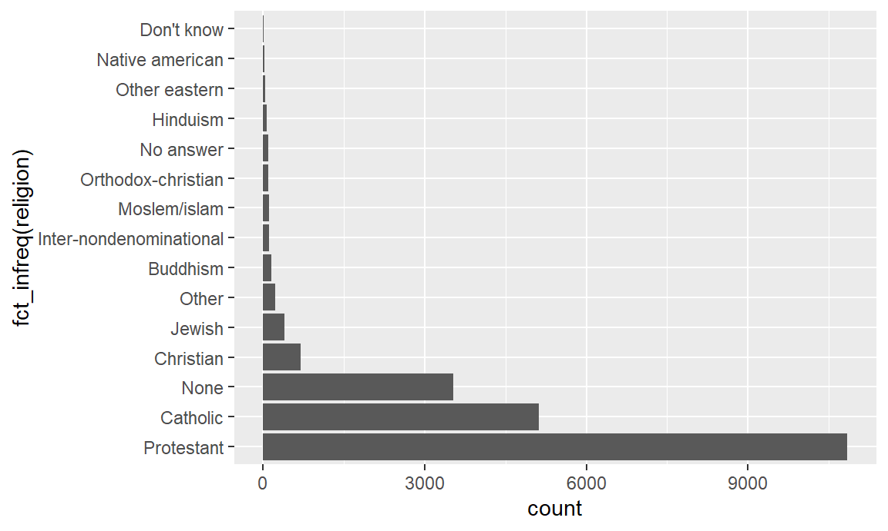
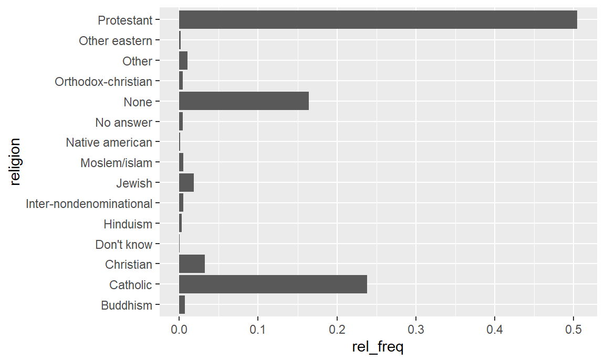

Chapter 8 Tutorial - Data voorbereiden
8.1 Before you start
During this tutorial, we’ll use several r-packages. Make sure to install and load them, if needed.
The forcats package contains a series of functions to easily manipulate factors (of which forcats is an anagram). The mice package can be used to analyze the occurence of missing values (MICE stands for Multiple Imputation by Chained Equations, refering to a technique to estimate missing values).
We also assume that you are familiar with the content of both our ggplot2 and dplyr tutorial. You can read the survey29 dataset provided with this tutorial if you want to try things out yourself.[^try]
If you want to try things yourself, make sure to follow the tutorial step by step. The incremental nature of the cleaning and transformation process does not allow to perform parts of this tutorial in isolation.
## Observations: 21,483
## Variables: 9
## $ year <chr> "2000", "2000", "2000", "2000", "2000", "2000", "2000", "20...
## $ marital <chr> "Never married", "Divorced", "Widowed", "Never married", "D...
## $ age <chr> "26", "48", "67", "39", "25", "25", "36", "44", "44", "47",...
## $ race <chr> "White", "White", "White", "White", "White", "White", "Whit...
## $ rincome <chr> "$8000 to 9999", "$8000 to 9999", "Not applicable", "Not ap...
## $ partyid <chr> "Ind,near rep", "Not str republican", "Independent", "Ind,n...
## $ relig <chr> "Protestant", "Protestant", "Protestant", "Orthodox-christi...
## $ denom <chr> "Southern baptist", "Baptist-dk which", "No denomination", ...
## $ tvhours <chr> "12", NA, "2", "4", "1", NA, "3", NA, "0", "3", "2", NA, "1...8.2 Introduction
This tutorial on cleaning and transformation is divided into three different sections.
- Reading
- Cleaning
- Transforming
Reading. The first task is to read the data provided in a particular format into R. While we will not cover this topic exhaustively, we will give useful pointers to appropriate R-packages to do so.
Cleaning. We clean the data by: removing mistakes, duplicates, etc.
Transforming. Here we do not target the removal of mistakes and inconsistencies, but rather try to make the data easier to analyse: creating discrete representations of continuous variables, adding calculated variables, or recoding the labels of categorical variables.
These steps in general take place before we do any of the analysis or visualizations which we saw in the ggplot2 and dplyr tutorials, although often multiple iterations are needed. Until now, we always received our data in a fairly clean state, but that is rarely the case in reality. Now, it’s time to do our own cleaning. Let’s go ahead!
8.3 Reading data
For our purpose, we will not discuss different data formats and how to read them at length.30 Mostly we will use the readRDS function, which you probably have seen before. For example,
A .RDS-file stores a single R-object in a serialized way. (RDS can be thought of a R Data Serialized). We can create an .RDS-file using saveRDS and read one using readRDS. Information systems will never export data as .RDS files – all .RDS-files are created within R. All the .RDS-files you have been using in the exercises and tutorials have been prepared by us. So, in which type of files can data be found in the wild? Let’s give you a quick tour of common file formats.
8.3.1 CSV and TSV
CSV-files are probably thé most common type of data files. CSV stand for Comma Seperated Values. These files can be seen as ordinary text files, where each line is an observation, i.e. a row, and columns are separated with commas (therefore its name). The first row can contain the names of the column, although this is not necessary. TSV is a much less common variant, which stands for Tab Separated Values. As its name suggests, values in this files are not seperated with commas but with tabs.
For CSV-files, there are two varying import functions: read.csv and read.csv2. The first is for regular comma separated files, while the latter is for semicolon seperated files. Otherwise, the usage is similar to readRDS. The functions for TSV are similar – just with a T instead of a C.
Both these functions are base-R function, and have many additional arguments to fine-tune the resulting data.frame based on peculiarities in the data file. However, the have become less used since the readr package from the tidyverse introduced faster functions which better defaults. These functions are read_csv and read_csv2, i.e. with an underscore instead of a period.
8.3.2 Excel
While we do not like Excel very much, many people unfortunately still do. As such, it will be probable that you have to read an Excel file sooner or later. Reading Excel files can be done using the special readxl package. This package contains the read_excel function.
Again, just like for csv, there are many additional arguments in read_excel. For example, you can set the sheet in the excel file you want to read, you can configure the types of the variables, and you can even specify a range in the excel file that you want to read, i.e. B3:G8.
8.3.3 JSON and XML
JSON - or JavaScript Object Notation - and XML - eXtensible Markup Language - are much more complex data notations compared with CSV. We will not discuss these formats here, but instead just mention the packages you can use if you every encounter these types.
- For JSON, the most common R-package is
jsonlite, which contains thefromJSONfunction. - For XML, multiple options exists, but we advise the
xml2package. Forxmlfiles, there is not a single function, but you’ll typically to combine many functions to get the data in the right format.
8.3.4 Other statistical packages
Sometimes you will need to read data which comes from other commercial data analysis and statistical software used by less R-savvy co-workers. Often you need this because the analysis at hand cannot be done by the commercial packages and R needs to rescue you. In particular, files can come from SPSS, STATA and SAS. For each of these files, the haven package contains a read-function.
8.3.5 Databases
Finally, it is also possible to analyse data which is stored in a data.base. The way to go here will depend on the type of database. One of the useful packages in DBI, but you will need a specific databased backend, such as RMySL, RSQLite, RPostgreSQL). Also useful is dbplyr, which enables many dplyr functions to be used directly on a data base, such that heavy computations don’t have to be done by your pc.
8.3.6 Background material
You can find more information on data import in Chapter 11 of the R for Data Science book, and on the help pages of mentioned packages and functions.
< This is the end of the optional reading data section >
8.3.7 Converting variables
Often an integral part of reading data from files, is making sure that all the variables in our data are correctly stored. Let factors be factors, and numbers be numbers. So, let’s have a look at the dataset.
## Observations: 21,483
## Variables: 9
## $ year <chr> "2000", "2000", "2000", "2000", "2000", "2000", "2000", "20...
## $ marital <chr> "Never married", "Divorced", "Widowed", "Never married", "D...
## $ age <chr> "26", "48", "67", "39", "25", "25", "36", "44", "44", "47",...
## $ race <chr> "White", "White", "White", "White", "White", "White", "Whit...
## $ rincome <chr> "$8000 to 9999", "$8000 to 9999", "Not applicable", "Not ap...
## $ partyid <chr> "Ind,near rep", "Not str republican", "Independent", "Ind,n...
## $ relig <chr> "Protestant", "Protestant", "Protestant", "Orthodox-christi...
## $ denom <chr> "Southern baptist", "Baptist-dk which", "No denomination", ...
## $ tvhours <chr> "12", NA, "2", "4", "1", NA, "3", NA, "0", "3", "2", NA, "1...That does not seem very right. Due to some evil forces, all the variables are stored as characters, which isn’t really correct. The year and age variables certainly should be numeric, while marital, for example, is clearly a nominal variable, and should this be stored as factor.
The type of variables can be changed with the following functions:31
as.numeric-> for numeric variablesas.integer-> for integer variablesas.factor-> for nominal variablesas.ordered-> for ordinal variablesas.character-> for character variables
In order to fix this, let’s use an old acquaintance from dplyr: mutate. We already learned that mutate can be used to add new variables to a datasets, but we can just as well use it to overwrite existing ones.
survey %>%
mutate(year = as.integer(year),
marital = as.factor(marital),
age = as.integer(age),
race = as.factor(race),
rincome = as.factor(rincome),
partyid = as.factor(partyid),
relig = as.factor(relig),
denom = as.factor(denom),
tvhours = as.numeric(tvhours)) %>%
glimpse ## Observations: 21,483
## Variables: 9
## $ year <int> 2000, 2000, 2000, 2000, 2000, 2000, 2000, 2000, 2000, 2000,...
## $ marital <fct> Never married, Divorced, Widowed, Never married, Divorced, ...
## $ age <int> 26, 48, 67, 39, 25, 25, 36, 44, 44, 47, 53, 52, 52, 51, 52,...
## $ race <fct> White, White, White, White, White, White, White, White, Whi...
## $ rincome <fct> $8000 to 9999, $8000 to 9999, Not applicable, Not applicabl...
## $ partyid <fct> "Ind,near rep", "Not str republican", "Independent", "Ind,n...
## $ relig <fct> Protestant, Protestant, Protestant, Orthodox-christian, Non...
## $ denom <fct> Southern baptist, Baptist-dk which, No denomination, Not ap...
## $ tvhours <dbl> 12, NA, 2, 4, 1, NA, 3, NA, 0, 3, 2, NA, 1, NA, 1, 7, NA, 3...That already looks better! However, observe that we did not yet store the result of our efforts. In fact, we want to use this opportunity to give all variables an easy name and undestandable name. For this, we can use the rename function. rename is a dplyr function with a very clear task: renaming variables. You can use it by giving it a list of new names connected to old names: new_name = old_name.
survey %>%
mutate(year = as.integer(year),
marital = as.factor(marital),
age = as.integer(age),
race = as.factor(race),
rincome = as.factor(rincome),
partyid = as.factor(partyid),
relig = as.factor(relig),
denom = as.factor(denom),
tvhours = as.numeric(tvhours)) %>%
rename(reported_income = rincome,
party = partyid,
religion = relig,
denomination = denom,
tv_hours = tvhours) %>%
glimpse ## Observations: 21,483
## Variables: 9
## $ year <int> 2000, 2000, 2000, 2000, 2000, 2000, 2000, 2000, 200...
## $ marital <fct> Never married, Divorced, Widowed, Never married, Di...
## $ age <int> 26, 48, 67, 39, 25, 25, 36, 44, 44, 47, 53, 52, 52,...
## $ race <fct> White, White, White, White, White, White, White, Wh...
## $ reported_income <fct> $8000 to 9999, $8000 to 9999, Not applicable, Not a...
## $ party <fct> "Ind,near rep", "Not str republican", "Independent"...
## $ religion <fct> Protestant, Protestant, Protestant, Orthodox-christ...
## $ denomination <fct> Southern baptist, Baptist-dk which, No denomination...
## $ tv_hours <dbl> 12, NA, 2, 4, 1, NA, 3, NA, 0, 3, 2, NA, 1, NA, 1, ...Certainly, there is no right answer in naming variables. Just make sure their names are understandable, easy to use and somewhat uniformly typesetted.
Furthermore, note that what we just did is not the only possible way. For instance, we could also directly create the new variable names with mutate, although we will have to remove the old names afterwards.
survey %>%
mutate(year = as.integer(year),
marital = as.factor(marital),
age = as.integer(age),
race = as.factor(race),
reported_income = as.factor(rincome),
party = as.factor(partyid),
religion = as.factor(relig),
denomination = as.factor(denom),
tv_hours = as.numeric(tvhours)) %>%
select(-rincome:-tvhours) %>%
glimpse ## Observations: 21,483
## Variables: 9
## $ year <int> 2000, 2000, 2000, 2000, 2000, 2000, 2000, 2000, 200...
## $ marital <fct> Never married, Divorced, Widowed, Never married, Di...
## $ age <int> 26, 48, 67, 39, 25, 25, 36, 44, 44, 47, 53, 52, 52,...
## $ race <fct> White, White, White, White, White, White, White, Wh...
## $ reported_income <fct> $8000 to 9999, $8000 to 9999, Not applicable, Not a...
## $ party <fct> "Ind,near rep", "Not str republican", "Independent"...
## $ religion <fct> Protestant, Protestant, Protestant, Orthodox-christ...
## $ denomination <fct> Southern baptist, Baptist-dk which, No denomination...
## $ tv_hours <dbl> 12, NA, 2, 4, 1, NA, 3, NA, 0, 3, 2, NA, 1, NA, 1, ...The result is the same, but the code is slightly shorter. If you really want to master this, you might be interested to know that there are plenty variants on mutate which might make your life even more easier (or confused).
- transmute: this will only keep the new variables your list in it
- mutate_if: this will work in the same way as select_if, e.g. applying a function on a certain type of columns
- mutate_at: this will apply a function on a certain set of columns you specify.
Don’t worry. You’ll come a long way if you can use select, mutate and rename. But don’t be afraid to challenge yourself and check out the more advanced stuff.
Now, let’s continue. Before we do, we copy the last part of code, this time storing the result again as survey, thereby overwriting the old version. You can do this in two ways: either put survey <- before the piece of code, or put -> survey after the piece of code. Again, there is no wrong or right way. Personally, I prefer the later option, as it nicely fits our narrative we created with the %>% symbol: we take a dataset, we perform some steps, and then we store it.
survey %>%
mutate(year = as.integer(year),
marital = as.factor(marital),
age = as.integer(age),
race = as.factor(race),
reported_income = as.factor(rincome),
party = as.factor(partyid),
religion = as.factor(relig),
denomination = as.factor(denom),
tv_hours = as.numeric(tvhours)) %>%
select(-rincome:-tvhours) -> surveyThis is a good place to pay attention to work-flow aspects. Before, during the analysis of data, different pieces of code rarely depended on each other. For example, if we made graph A and then table B, both could be made independent from each other. We never stored the results we created to be used later (apart from a sample of data we sometimes took.) However, now that we will be cleaning and transforming the data, we will always update the data.frame, typically under the same name. Indeed, we don’t want to end up with a list of survey, survey2, survey3, survey4, without remembering their differences. So, at each step, we update the previous version of survey.
However, there is a risk. If we make a mistake, our data could be broken. For example, if we erroneously converted race to numeric, the as.numeric function will fail to do so and create a column full of NAs instead. We can then quickly correct our mistake in the code, but this won’t bring the original race variable back – it was gone the moment we mistakenly converted it.
To right our wrongs, we will need to reload the data, and all the transformations we already applied before. Just correcting the code is no longer going to be sufficient, we need to correct our data. When working in R Markdown, this is easiest done with the central button in an R-chunk, as this will rerun all the previous R-chunks, bringing our data in the state it was in before.
These dependencies in our workflow also mean that exercises will more depend on each other, and we must always be sure to save our updated data.frame. Not updating the data (or running the code) will be a frequent source of errors later on. Be aware. (You are warned)
8.4 Cleaning Data
Now that we have imported the data and made sure that all the variables at least have to appropriate type, it’s time to start cleaning the data. In particular, we will cover the following topics
- Duplicates observations
- Cleaning of categorical variables
- Cleaning of continuous variables
- Checking Data inconstencies
Furthermore, we will also spend some time discussing missing values. That’s a lot of concepts to cover, so let’s get started!
8.4.1 Duplicates Removal
Sometimes, it might happen that some rows were accidently included multiple times in the dataset. There is an easy way to find these, and to remove them.
The duplicated function (a base R function), returns a logical vector indicating duplicate rows in a dataset. The vector will have the same length as the number of rows in the dataset, and will be TRUE for rows which are not unique, and FALSE otherwise.
## Mode FALSE TRUE
## logical 21220 263It seems that there are 263 in our data which are not unique. We can take a look at these by using the output of duplicated as an input of filter.[^point]
## # A tibble: 263 x 9
## year marital age race reported_income party religion denomination
## <int> <fct> <int> <fct> <fct> <fct> <fct> <fct>
## 1 2000 Married 48 White $25000 or more Ind,~ Catholic Not applica~
## 2 2000 Never ~ 39 Other $25000 or more Not ~ Catholic Not applica~
## 3 2000 Married 36 Other $25000 or more Not ~ Catholic Not applica~
## 4 2000 Never ~ 30 White $25000 or more Not ~ Catholic Not applica~
## 5 2000 Never ~ 19 White $1000 to 2999 Not ~ Catholic Not applica~
## 6 2000 Married 47 White $25000 or more Not ~ Catholic Not applica~
## 7 2000 Married 29 White $25000 or more Inde~ Catholic Not applica~
## 8 2000 Married 39 White $10000 - 14999 Not ~ Catholic Not applica~
## 9 2000 Widowed 80 White Not applicable Stro~ Protest~ Southern ba~
## 10 2002 Married 43 White Not applicable Inde~ Catholic Not applica~
## # ... with 253 more rows, and 1 more variable: tv_hours <dbl>Notice the . within the duplicated function? The point has a special significance if used together with the piping symbol. Internally, it will be replaced with the input coming through the piping symbol. As such, survey %>% filter(duplicated(.)) is equal to filter(survey, duplicated(survey)). It’s very convenient if you need to refer to the piping input multiple times, not only as the first argument of the function.
Right now we selected the duplicate rows and we can have a look at them. If we only want to retain the unique rows, we can add a !-symbol to negate the selection.
## # A tibble: 21,220 x 9
## year marital age race reported_income party religion denomination
## <int> <fct> <int> <fct> <fct> <fct> <fct> <fct>
## 1 2000 Never ~ 26 White $8000 to 9999 Ind,~ Protest~ Southern ba~
## 2 2000 Divorc~ 48 White $8000 to 9999 Not ~ Protest~ Baptist-dk ~
## 3 2000 Widowed 67 White Not applicable Inde~ Protest~ No denomina~
## 4 2000 Never ~ 39 White Not applicable Ind,~ Orthodo~ Not applica~
## 5 2000 Divorc~ 25 White Not applicable Not ~ None Not applica~
## 6 2000 Married 25 White $20000 - 24999 Stro~ Protest~ Southern ba~
## 7 2000 Never ~ 36 White $25000 or more Not ~ Christi~ Not applica~
## 8 2000 Divorc~ 44 White $7000 to 7999 Ind,~ Protest~ Lutheran-mo~
## 9 2000 Married 44 White $25000 or more Not ~ Protest~ Other
## 10 2000 Married 47 White $25000 or more Stro~ Protest~ Southern ba~
## # ... with 21,210 more rows, and 1 more variable: tv_hours <dbl>However, this is a little bit verbose. Therefore, dplyr contains a very handy short cut: the distinct function.
## # A tibble: 21,220 x 9
## year marital age race reported_income party religion denomination
## <int> <fct> <int> <fct> <fct> <fct> <fct> <fct>
## 1 2000 Never ~ 26 White $8000 to 9999 Ind,~ Protest~ Southern ba~
## 2 2000 Divorc~ 48 White $8000 to 9999 Not ~ Protest~ Baptist-dk ~
## 3 2000 Widowed 67 White Not applicable Inde~ Protest~ No denomina~
## 4 2000 Never ~ 39 White Not applicable Ind,~ Orthodo~ Not applica~
## 5 2000 Divorc~ 25 White Not applicable Not ~ None Not applica~
## 6 2000 Married 25 White $20000 - 24999 Stro~ Protest~ Southern ba~
## 7 2000 Never ~ 36 White $25000 or more Not ~ Christi~ Not applica~
## 8 2000 Divorc~ 44 White $7000 to 7999 Ind,~ Protest~ Lutheran-mo~
## 9 2000 Married 44 White $25000 or more Not ~ Protest~ Other
## 10 2000 Married 47 White $25000 or more Stro~ Protest~ Southern ba~
## # ... with 21,210 more rows, and 1 more variable: tv_hours <dbl>Whether we want to remove duplicate rows or not really depends on the data. In our cases, it is not at all surprising that some of these rows are the same. It just happens that some people are very much alike: the same age, income, religion etc.
However, it other cases, such duplicate rows would be impossible. For instance, if there are variables which would per definition make each row unique, such as a national id number. In such cases, duplicate rows clearly need further consideration and removing them might be the right solution. But for now, let’s continue.
8.4.2 Cleaning Categorical Variables
For the cleaning of categorical variables, we consider the following changes
- Recoding values
- Reordering values
8.4.3 Recode Categorical Variables
Sometimes, categorical variables, i.e. factors, have weird or even wrong labels. In that case, we would like to recode these values. Finding wrong labels isn’t always easy, and often these mistakes will surface later during the analysis, in which case you have to take a step back and correct them afterwards. Nonetheless, looking at frequency tables in alphabetical order, or ordered from least to most frequent, can point to some mistakes.32 Let’s take the party variable as an example.
## # A tibble: 10 x 2
## party n
## <fct> <int>
## 1 Don't know 1
## 2 Ind,near dem 2499
## 3 Ind,near rep 1791
## 4 Independent 4119
## 5 No answer 154
## 6 Not str democrat 3690
## 7 Not str republican 3032
## 8 Other party 393
## 9 Strong democrat 3490
## 10 Strong republican 2314While the values for party are not really wrong, they are not every uniform: Str and Strong, Ind and Independent. Let’s change them. We can recode factor levels using the fct_recode function from forcats. As arguments, we need to say which variable to recode, and which levels to changes.
data %>%
mutate(<factor_name> = fct_recode(<factor_name>,
"<new_level1>" = "<old_level1>",
"<new_level2>" = "<old_level2>")We can recode as many old levels into new levels as we want. Furthermore, you can replace several old levels by the same new level. Any level not mentioned will be left unchanged. Let’s create some uniformity in the political affiliations.
survey %>%
mutate(party = fct_recode(party,
"Republican, strong" = "Strong republican",
"Republican, weak" = "Not str republican",
"Independent, near rep" = "Ind,near rep",
"Independent, near dem" = "Ind,near dem",
"Democrat, weak" = "Not str democrat",
"Democrat, strong" = "Strong democrat"
)) -> survey Don’t forget to update the dataset!
8.4.4 Reorder Categorical Variables
Another possibility, especially for ordinal factors, is that the values are not really wrong, but they are in the wrong order. For instance, take a look at the reported income.
## # A tibble: 16 x 2
## reported_income n
## <fct> <int>
## 1 $1000 to 2999 395
## 2 $10000 - 14999 1168
## 3 $15000 - 19999 1048
## 4 $20000 - 24999 1283
## 5 $25000 or more 7363
## 6 $3000 to 3999 276
## 7 $4000 to 4999 226
## 8 $5000 to 5999 227
## 9 $6000 to 6999 215
## 10 $7000 to 7999 188
## 11 $8000 to 9999 340
## 12 Don't know 267
## 13 Lt $1000 286
## 14 No answer 183
## 15 Not applicable 7043
## 16 Refused 975The value “Lt $1000” - meaning Limited, or less than $1000 - should be shown first, but instead it is in the wrong place. Here, we need another forcats function, namely fct_relevel. This function can be used in two different ways to put a level into a different place.
Option 1: Move one (or more) level(s) to the front
Option 2: Insert one (or more) level(s) after a number N of levels
data %>%
mutate(factor_name = fct_relevel(factor_name,
"level1_to_move","level2_to move", "...", after = N))So, let’s move the LT $1000 level to the first place.
We can check the results by using count on the updated survey data.frame.
## # A tibble: 16 x 2
## reported_income n
## <fct> <int>
## 1 Lt $1000 286
## 2 $1000 to 2999 395
## 3 $10000 - 14999 1168
## 4 $15000 - 19999 1048
## 5 $20000 - 24999 1283
## 6 $25000 or more 7363
## 7 $3000 to 3999 276
## 8 $4000 to 4999 226
## 9 $5000 to 5999 227
## 10 $6000 to 6999 215
## 11 $7000 to 7999 188
## 12 $8000 to 9999 340
## 13 Don't know 267
## 14 No answer 183
## 15 Not applicable 7043
## 16 Refused 975Changing the order of levels of a categorical variable is useful for both nominal and ordinal data. For ordinal data, it is logical that we want to order of the levels to be the correct one. But also for nominal data we might want to change the order. For example, there are often catch-all values such as “Other” or “Various”. It is good practice to treat these values differently compared to the regular values in a nominal, by putting them last. As such, they will shown up on one end of a graph or table, and not in between the other values. Let’s take a look at party.
## # A tibble: 10 x 2
## party n
## <fct> <int>
## 1 Don't know 1
## 2 Independent, near dem 2499
## 3 Independent, near rep 1791
## 4 Independent 4119
## 5 No answer 154
## 6 Democrat, weak 3690
## 7 Republican, weak 3032
## 8 Other party 393
## 9 Democrat, strong 3490
## 10 Republican, strong 2314Deciding whether a factor is ordinal or not is not always that straigthforward. If we look at the reported income, it is clear that there is an order. However, we didn’t define party as an ordered factor. There is no “best” or “superior” political party, so explicitly program this variable as a ordinal factor would be one bridge too far – we would have to decide which end of the political spectrum is the “lowest” and which the “highest”. However, this is somewhat undesirable if we make graphs.
survey %>%
ggplot(aes(party)) +
geom_bar(fill = "dodgerblue4") +
theme_light() +
theme(axis.text.x = element_text(angle = 45, hjust = 1)) 
When we don’t have an ordinal factor, the order of labels will be often be alphabetical. In this case, because we recoded the labels before, they are not even in alphabetical order any more..33 The resulting graph is difficult to read, as the x-axis is scrambled. A natural reflex would be to order the bar chart according to frequency, but that would not really improve the readability in this special case. Instead, we can apply a more logical order, without necessary considering party as an ordinal variable. Such a logical order is readily available for the current variable, as we often speak of left and right-wing politics. We can leave the alternative answers (Don’t know, No Answer, Other Party), either at the start or end of the order. By not noticing them in the code below, the latter will happen.
survey %>%
mutate(party = fct_relevel(party,
"Democrat, strong",
"Democrat, weak",
"Independent, near dem",
"Independent",
"Independent, near rep",
"Republican, weak",
"Republican, strong")) -> surveyOur graph now looks as follows. Better, isn’t it?34
survey %>%
ggplot(aes(party)) +
geom_bar(fill = "dodgerblue4") +
theme_light() +
theme(axis.text.x = element_text(angle = 45, hjust = 1)) In conclusion we use
fct_recodefor recoding values of a categorical variable, andfct_relevelfor manually reordering values of a categorical variable.
Later on, we will seen more specific functions for recoding and reordering categorical variables when transforming data. Make sure you don’t lose the overview! First, we look at cleaning continuous data.
8.4.5 Cleaning continuous data
For continuous data, the range of possible values is infinite, and it is therefore more difficult to find wrong values. Without information on the context of the data, finding wrong continuous entries is extremely difficult.
8.4.6 Errors
In the survey data.frame, there are three continuous variables: year, age and (daily) tv_hours. For each of these variables, we have a certain idea about the possible range of values. The age will probably by somewhere between 20 and 100 (knowing that the dataset contains information on adults). The number of tv hours should be between 0 and 24, as there are 24 hours in a day. Also for year we more or less know what to expect. Let’s have a look at each.35
## Min. 1st Qu. Median Mean 3rd Qu. Max.
## 2000 2002 2006 2007 2010 2014For year, everything seems allright. We converted it already to an integer variable before, so we don’t have to check for erroneous decimal years. Furthermore, the minimum and maximum seems quite alright. When year contains errors, we most likely observe it at thise extremes: 2102 instead of 2012, 1099 instead of 1999, or 9999 indicating that it is actually missing.
Let’s look at age then.
## Min. 1st Qu. Median Mean 3rd Qu. Max. NA's
## 18.00 33.00 46.00 47.18 59.00 89.00 76On first sight, there does not seem to be problems with age. There are 76 missing values, but the values present are situated between 18 and 89 years, which again is a logical range. Also age was converted without problems to an integer variable before, so all values are integer numbers.
If we look at tv hours, we see something peculiar.
## Min. 1st Qu. Median Mean 3rd Qu. Max. NA's
## 0.000 1.000 2.000 3.004 4.000 84.000 10146We see there are 10146 missing values, which is high but not necessarily wrong (unless we accidently removed some values, which we didn’t). There are no negative values, as the minimum number of hours someone watched tv is zero. However, on the other side, we see that the number of tv hours goes up to 84 hours a day - this is clearly wrong. We all have just 24 hours in a day.
We can further look at the records for which the tv hours are more than 24.
## # A tibble: 5 x 9
## year marital age race reported_income party religion denomination tv_hours
## <int> <fct> <int> <fct> <fct> <fct> <fct> <fct> <dbl>
## 1 2000 Married 84 White Not applicable Inde~ Protest~ No denomina~ 28
## 2 2000 Widowed 68 White Not applicable Inde~ Protest~ Other luthe~ 84
## 3 2010 Married 69 White Not applicable Demo~ Protest~ Baptist-dk ~ 35
## 4 2010 Divorc~ 57 White Not applicable Demo~ Catholic Not applica~ 56
## 5 2014 Separa~ 30 White Not applicable Inde~ None Not applica~ 28There seem to be 5 observations for which the number of tv hours is clearly wrong, and we need to correct them. However, we don’t have a clue how to correct them in our case. The only thing we can do, is to deleted these values, and make them missing.36 Observe, we do not delete the entire observations, just the tvhours variable for these observations. The other variables can still be used for these 5 rows.
We can do this by using the ifelse function. This function is a very generic function which returns a value dependent on a logical test.37 The function can be used as follows.
Suppose we have a vector score containing student scores. We can use the ifelse function to create a vector grade with values FAILED and PASSED.
Now, let’s use the function to update the tv hours variable.
So, what happens? The tv_hours variable is updated using mutate. If it is larger than 24, the new value will be NA, i.e. not available. Otherwise, the new value will just be the old value of tv_hours. After the column is updated, the new data.frame is again stored as survey.
Checking for errors, both categorical and continuous, can be a street without ending. Usually, you do the best you can by using the tricks discussed above for each variable. If this seems like a lot of work, remember that 70% of a typical data project goes to cleaning and transforming data, and only 30% to actual analysis and interpretation.
And even then, despite all your time and efforts, in can happen that your discover data errors in the analysis phase. Not surprisingly, as you will really look at the data in detail at that point. When this happens, you go back to your cleaning and transformation scripts and modify them where needed. As such, it is important that you store the original data as well as all the changes you performed. Even more important is to make sure that all your analysis are stored as a script of RMarkdown, so that they can quickly be rerun after correcting the error. This is called reproducible research and will save you a lot of time and mistakes. Have a look at this video for an illustration of reproducible work-flows.
8.4.7 Outliers
It also happens that some continuous values are not necessarily wrong, but exceptionally high or low. These exceptions we don’t call error, but instead we call outliers – a data point that is distant from other observations. For example, consider tv hours. Before we removed values greater than 24 hours, because there are logically errors. Let’s have a look at the remaining values.
survey %>%
ggplot(aes(tv_hours)) +
geom_histogram(binwidth = 1,
color = "white", fill = "dodgerblue4") +
theme_light()
It seems that while most people watch television between 0 and 5 hour a day, there are some exceptionally high values. It’s not clear whether they are mistakes like the onces we removed before, or just abnormal tv-addicts. Let’s have a look at the 25 highest values, and compare them with some related attributes, such as age, income and marital status (comparing them with religion or party might be regarded as politically incorrect, so let’s steer clear from that danger zone).38
survey %>%
arrange(-tv_hours) %>%
slice(1:25) %>%
select(tv_hours, marital, age, reported_income) %>%
pander()| tv_hours | marital | age | reported_income |
|---|---|---|---|
| 24 | Never married | 30 | Not applicable |
| 24 | Separated | 45 | Not applicable |
| 24 | Never married | 33 | $6000 to 6999 |
| 24 | Divorced | 53 | Not applicable |
| 24 | Divorced | 50 | No answer |
| 24 | Never married | 44 | Not applicable |
| 24 | Never married | 21 | Don’t know |
| 24 | Widowed | 71 | Not applicable |
| 24 | Widowed | 62 | Not applicable |
| 24 | Widowed | 52 | Refused |
| 24 | Never married | 56 | Not applicable |
| 24 | Divorced | 51 | Not applicable |
| 24 | Divorced | 75 | Not applicable |
| 24 | Separated | 49 | $8000 to 9999 |
| 24 | Divorced | 65 | Not applicable |
| 24 | Never married | 27 | Not applicable |
| 24 | Married | 71 | Not applicable |
| 24 | Never married | 27 | $8000 to 9999 |
| 24 | Separated | 63 | Not applicable |
| 24 | Divorced | 31 | $5000 to 5999 |
| 24 | Separated | 37 | Not applicable |
| 24 | Married | 46 | Not applicable |
| 23 | Never married | 32 | Not applicable |
| 22 | Divorced | 69 | Not applicable |
| 22 | Married | 63 | Not applicable |
It seems that many of the respondents watch the maximum number of 24 hours tv each day, which is surprising. We can use the other variables to get a better idea about these observations. We see that many of them are single (never married, divorced or separated). The age seems to be relatively high, but not very remarkable (average age for the dataset was about 47). Finally, many did not report their income.
This information can be interpreted in multiple ways:
- These are single, lazy people with an income who watch tv all day
- These are people who weren’t very honest when filling out their information (also not reporting any income).
Deciding whether something is wrong or exceptional is not trivial and requires certain domain knowledge and assumptions. In this case, the logical assumption is that these numbers are incorrect (even lazy, tv-binging people need to sleep now and then). The more difficult question is at what point something becomes incorrect. 20 hours? 16? For continuous variables it can help to look at a boxplot and see until where the whiskers go. However, this is no exact science, especially when variables are not distributed symmetrically.
For the current case, we can say the people who watch more than 8 hours tv either filled in an incorrect number, or are exceptional tv-watchers. As such, we remove all values higher than 8.
8.4.8 Data inconsistencies
Another approach to check for errors is to look at more than one variable at the same time, and check for obvious inconsistencies. This can be though of as “rules” which are violated. In the current dataset, we could check that all married people should be at least 18 years old. Since all observations concern people which are at least 18 years old, we know that this rule is not violated.
In other cases, example rules can be:
- the departure of a flight should take place before it can arrive. (Taking into account different time zones, obviously.)
- someone whose job status is “unemployed” cannot have a reported income (unless unemployment benefits are taken into account).
- etc.
Often, you will not have time to check all posible rules you can think of. Furthermore, some rules will be based on certain assumptions which you need to check. For example, the age at which one can marry depends on the country, and thus be lower or higher than 18.
8.4.9 Missing values
In a real-life setting, data typically comes with missing values. The values might be missing from the offset, or they might be missing because we removed them as outliers or wrong values. In subsequent paragraphs we will see how to analyse missing values – e.g. are they missing at random or not? – and how to handle them during your analysis. We are obliged to say that there are also techniques which can be used to guess missing values based on the values for other attributes and other observations with similar values. This is called missing value imputation and as a separate field on itself. Due to the complexities involved, we will not talk about it here, but the interested reader is refered to this manual of the mice-package.
8.4.10 Analyzing missing data
There are three different ways in which missing data can occur (see theory).
- Missing Completely at Random (MCAR)
- Missing at Random (MAR)
- Not Missing at Random (NMAR)
Below, we illustrate some techniques to analyse the missing values in your data. The most obvious way to check whether your data contains missing values is by looking at the summary.
## year marital age race
## Min. :2000 Divorced : 3383 Min. :18.00 Black: 3129
## 1st Qu.:2002 Married :10117 1st Qu.:33.00 Other: 1959
## Median :2006 Never married: 5416 Median :46.00 White:16395
## Mean :2007 No answer : 17 Mean :47.18
## 3rd Qu.:2010 Separated : 743 3rd Qu.:59.00
## Max. :2014 Widowed : 1807 Max. :89.00
## NA's :76
## reported_income party religion
## $25000 or more:7363 Independent :4119 Protestant:10846
## Not applicable:7043 Democrat, weak :3690 Catholic : 5124
## $20000 - 24999:1283 Democrat, strong :3490 None : 3523
## $10000 - 14999:1168 Republican, weak :3032 Christian : 689
## $15000 - 19999:1048 Independent, near dem:2499 Jewish : 388
## Refused : 975 Republican, strong :2314 Other : 224
## (Other) :2603 (Other) :2339 (Other) : 689
## denomination tv_hours
## Not applicable :10072 Min. :0.000
## Other : 2534 1st Qu.:1.000
## No denomination : 1683 Median :2.000
## Southern baptist: 1536 Mean :2.659
## Baptist-dk which: 1457 3rd Qu.:4.000
## United methodist: 1067 Max. :8.000
## (Other) : 3134 NA's :10509This tells us for which variables there are missing data, and how many. However, it does not tell us anything about the relationships between missing values. In order to look at patterns of missing data, we can use the md.pattern function (missing data patterns) from the package mice.

## year marital race reported_income party religion denomination age
## 10936 1 1 1 1 1 1 1 1
## 10471 1 1 1 1 1 1 1 1
## 38 1 1 1 1 1 1 1 0
## 38 1 1 1 1 1 1 1 0
## 0 0 0 0 0 0 0 76
## tv_hours
## 10936 1 0
## 10471 0 1
## 38 1 1
## 38 0 2
## 10509 10585The output of md.pattern is a bit cryptic, but let’s have a closer look. Each column refers to one of the variables, as is indicated. Each row is a pattern consisting of 1s (data is not missing) and 0s (data is missing). The first row, where all variables have a 1, is a pattern where non of the variables is missing. This is also denoted by the zero in the last column. In the second rows, age is indicated with a zero, meaning that for this pattern, the variable age is missing. The last column thus indicates 1 missing value. The last pattern (the penultimate row) is one with 2 missing values as indicated in the last column. In particular, age and tv hours are missing.
The number is the first (unnamed) column indicate how many observations of each pattern there are. As such, the first pattern has the most observations – 10936 persons without missing data. The last pattern (tv hours and age missing) occurs 38 times. The final row equals the number of missing values for each variable (the same information summary gave us). Finally, the number in the lower-right corner is the total number of missing values.
The output of md.patterns can show us whether the occurence of missing values are related. For example, if age is missing, then tv hourse is also missing. The latter is not the case, as there are as many observaties where age is missing and tv hours not, as there are observations were age is missing and tv hours also.
Next to md.pattern we can also check whether the occurence of missing values is related to the value for other variables. As such, we can ask ourselves whether people from certain religions or political affiliations are more or less likely to report there age our the number of hours they watch tv. These patterns can be checked using ggplot/dplyr, by creating a new variable that indicates whether an observation has a missing value.
Let’s consider age. We add a variable to indicate that age is or is not missing. Note that to check this, we need a special function. We cannot use age == NA to see if age is missing. In the latter condition, we are comparing age with NA, i.e. we are comparing age with something we don’t have. We can never know whether age is equal to something we don’t have, so the result of that is always NA, regardless of the value of age. As an example, consider the variables a and b, of which a is missing and b is not.
## [1] NA## [1] NASo, how do we check if something is NA? We use the special function is.na for that.
## [1] TRUE## [1] FALSEThus, for the survey data:
Note that we store the data.frame with the additional variables under another name, since we will not need these variables in the eventual analysis stage, just for looking at the missing data for the moment.
When we compare the missing/not missing variable with a categorical variable, we have in fact 2 categorical variables. Thus, we can use a graph or table which is appropriate for comparing categorical variables. As we all (should) know by now, we can use a bar chart.
survey_md %>%
ggplot(aes(reported_income, fill = age_missing)) +
geom_bar(position = "fill") +
coord_flip()The bar chart shows that people who didn’t report their income, were more likely to not report their age also..39
We can do the same for tv-hours. We then see that the percentage of missing values varies – being somewhat higher or lower for certain incomes – but no clear patterns exist.
survey_md %>%
ggplot(aes(reported_income, fill = tv_missing)) +
geom_bar(position = "fill") +
coord_flip()Of course, the occurence of missing values can be compared with more than one variable, not just income. Below we show the comparison of tv-hours missing with political affiliation. Here we can clearly see that there is one answer for political party which was only used for observations which did not include the tv hours.
As a final example, we can compare the missing of tv hours with a continuous variable, let’s say age. Are people who didn’t report the number of hours they watch tv generally older or younger? The boxplots below don’t show any difference.

How many comparisons you make for each variable where data is missing is up to you – but you have to gather reasonable evidence whether you missing values are MAR, MCAR or NMAR.
8.4.11 Working around missing data
While we will not see how to impute – guess – missing values, it is quite important to know how to work with them.
8.4.12 Visualizations
First, consider visualizations. When working with ggplot, missing values will often be ignored automagically. For instance, if we try to create a histogram of the age, ggplot will tell us that it ignored some missing values through a warning.
survey %>%
ggplot(aes(age)) +
geom_histogram(binwidth = 5, fill = "dodgerblue4", color = "white") +
theme_light()## Warning: Removed 76 rows containing non-finite values (stat_bin).
The warning
tells us when and how many missing values are ignored.
In case that a categorical variable has missing values, NA will appear as a seperate category. For example, consider the dataset survey2 (which we will just use here as example), which has missing values for several variables.
## age denomination marital
## Min. :18.00 Not applicable :9960 Divorced :3351
## 1st Qu.:33.00 Other :2508 Married :9999
## Median :46.00 No denomination :1665 Never married:5359
## Mean :47.18 Southern baptist:1521 No answer : 17
## 3rd Qu.:59.00 Baptist-dk which:1439 Separated : 738
## Max. :89.00 (Other) :4159 Widowed :1788
## NA's :280 NA's : 231 NA's : 231
## party race religion
## Independent :4080 Black: 3098 Protestant:10733
## Democrat, weak :3658 Other: 1941 Catholic : 5066
## Democrat, strong :3453 White:16226 None : 3485
## Republican, weak :2997 NA's : 218 Christian : 685
## Independent, near dem:2479 Jewish : 384
## (Other) :4604 (Other) : 902
## NA's : 212 NA's : 228
## reported_income tv_hours year
## $25000 or more:7294 Min. :0.000 Min. :2000
## Not applicable:6973 1st Qu.:1.000 1st Qu.:2002
## $20000 - 24999:1274 Median :2.000 Median :2006
## $10000 - 14999:1159 Mean :2.659 Mean :2006
## $15000 - 19999:1034 3rd Qu.:4.000 3rd Qu.:2010
## (Other) :3544 Max. :8.000 Max. :2014
## NA's : 205 NA's :10596 NA's :206Let’s say we make a bar chart of the religion variable. The NA value then appears as a seperate category and gets its own bar. Automatically, this category will be plotted at the side of the others, not between them.

As such, ggplot handles missing values without problem and quite transparent. The same is not true when we go to numeric computations.
8.4.13 Numerical analysis
Let’s start with the good news. If we create a frequency table of a categorical value with missing values, the NA’s will be considered just as any other value. For example, we can make a frequency table to support the graph above for survey2.
survey2 %>%
group_by(religion) %>%
summarize(frequency = n()) %>%
mutate(relative_frequency = frequency/sum(frequency)) %>%
arrange(-frequency) %>%
pander| religion | frequency | relative_frequency |
|---|---|---|
| Protestant | 10733 | 0.4996 |
| Catholic | 5066 | 0.2358 |
| None | 3485 | 0.1622 |
| Christian | 685 | 0.03189 |
| Jewish | 384 | 0.01787 |
| NA | 228 | 0.01061 |
| Other | 220 | 0.01024 |
| Buddhism | 147 | 0.006843 |
| Inter-nondenominational | 107 | 0.004981 |
| Moslem/islam | 103 | 0.004794 |
| Orthodox-christian | 94 | 0.004376 |
| No answer | 92 | 0.004282 |
| Hinduism | 70 | 0.003258 |
| Other eastern | 32 | 0.00149 |
| Native american | 22 | 0.001024 |
| Don’t know | 15 | 0.0006982 |
Unfortunately, the same is not true when we start to compute metrics for centrality or spread. By design, when you apply a function on a vector containing missing values, the function will return a missing value. Consider the vector below, of which we want to know the mean and sum
## [1] NA## [1] NAJust as the warning we got when using ggplot with missing values, this result is warning. It warns us that we want to compute something about a vector which partly misses. However, the warning is quite strong here; it doesn’t give us anything we can use.
In order to circumvent this from happening, each of these functions has a argument which is called na.rm – meaning “NA remove”. If we say na.rm = T, missing values will be removed and ignored, and the function will compute the result with the remaining value. Thus,
## [1] 16.5## [1] 66The fact that we have to explicitly state that we want to ignore missing values is R’s safety mechanism which prevents us from ignoring missing values by accident.
Thus, if we want to compute measures of centrality and spread for, let’s say, age, we will need to use this argument if we want to come up with anything.40
survey %>%
summarize(min = min(age, na.rm = T),
mean = mean(age, na.rm = T),
max = max(age, na.rm = T),
iqr = IQR(age, na.rm = T))## # A tibble: 1 x 4
## min mean max iqr
## <int> <dbl> <int> <dbl>
## 1 18 47.2 89 26Finally, what happens when we want to compute correlations? For instance, how is age and tv hours correlated. Both of these have missing values. We could try the following:
## Error in cor(., na.rm = T): unused argument (na.rm = T)Oops, that was wishful thinking from my part. It seems that the na.rm argument doesn’t exist for the cor function. So far for consistency in base R functions.
In order to compute correlations, we need to ensure that we only consider rows without missing values. We can do this with the na.omit function. This functions removes – omits – all rows which have one or more missing values.
## age tv_hours
## Min. :18.00 Min. :0.000
## 1st Qu.:33.00 1st Qu.:1.000
## Median :45.00 Median :2.000
## Mean :47.13 Mean :2.659
## 3rd Qu.:60.00 3rd Qu.:4.000
## Max. :89.00 Max. :8.000Then, we can compute the correlation.
## age tv_hours
## age 1.0000000 0.1895392
## tv_hours 0.1895392 1.0000000The na.omit function can be somewhat dangerous and should only be used in exceptional cases as these. It can make a huge difference if we do it before select. Consider again the survey2 dataset, where all variables have some missing values.
This dataset has the following number of rows.
## [1] 21483If we select age and tv hours, and remove rows with missing values, we are left with the following number of rows
## [1] 10732But, if we first remove rows with missing values, and then select the two variables, we are only left with the following number of rows.
## [1] 9974Do you see what’s different? Have a good look. If we perform the removal before the select, it will take into account missing values for ALL variables. If we do the select first, it will only check for the variables we retain. This nuance can make a huge difference in practice. Using the na.omit function should always raise an alert in your mind that directs you to be cautious.
In conclusion, it is advised to be cautious all the way when working with missing value. And with those wise words, we end our cleaning efforts, and proceed to transformations.
8.5 Transforming Data
Whereas cleaning data is focussed on finding errors, transforming data is about making it more easier to analyse. There are many ways to do so.
Firstly, we can remove the number of levels in a categorical variable, preventing the plotting of too many different categories. Secondly, we can also create new variables based on existing ones. The latter is also called enriching data. Moreover, we can adjust variables to make them easier to interpret. For example, using distances in km instead of miles (or the other way around when your are British or American). Furthermore, we might want to discretize continuous variables – turning them into categorical ones – thereby enabling us to use other analyses or visualizations. Finally, to conclude out tutorial, we will also discuss some transformations which are useful when we are visualizing data, most notably to order variables.
Many many things to do, so time to start.
8.5.1 Discretization of continuous variables
Turning a continuous variable into a categorical one is called discretization. Several functions to do this are provided by ggplot.
cut_width: creating intervals of a specific widthcut_interval: creating a specific number of intervals of equal widthcut_number: creating a specific number of interval with an equal number of observations.
For example, we can cut tv hours into interval of width 4.41
## # A tibble: 3 x 2
## tv_hours n
## <fct> <int>
## 1 [0,4] 9421
## 2 (4,8] 1553
## 3 <NA> 10509Alternatively, we can cut tv hours into 4 intervals of equal with.
## # A tibble: 5 x 2
## tv_hours n
## <fct> <int>
## 1 [0,2] 6059
## 2 (2,4] 3362
## 3 (4,6] 1172
## 4 (6,8] 381
## 5 <NA> 10509Or, we can cut tv hours into three intervals which contain an equal number of observations.
## # A tibble: 4 x 2
## tv_hours n
## <fct> <int>
## 1 [0,2] 6059
## 2 (2,3] 1956
## 3 (3,8] 2959
## 4 <NA> 10509Here, it should be noted that the intervals do not contain the equal amount of observations at all. This is because there are many observations with a unique value wich cannot be split further. But nevertheless, cut_number will try its best, which will turn out better if the values of the variable are more unique. For example, age lends itself better for this:
## # A tibble: 6 x 2
## age n
## <fct> <int>
## 1 [18,31] 4656
## 2 (31,41] 4305
## 3 (41,51] 4207
## 4 (51,63] 4149
## 5 (63,89] 4090
## 6 <NA> 76Each of the discritization functions allows us to modify the names of the categories – instead of the default interval notation by providing a vector of names to the labels argument. For example
survey %>%
mutate(age_category = cut_number(age, n = 3, labels = c("Young","Middle-aged","Old"))) %>%
group_by(age_category) %>%
summarize(min = min(age), max = max(age), frequency = n())## # A tibble: 4 x 4
## age_category min max frequency
## <fct> <dbl> <dbl> <int>
## 1 Young 18 37 7234
## 2 Middle-aged 38 54 7117
## 3 Old 55 89 7056
## 4 <NA> NA NA 76In the last example we stored the discretized variable under a different name. This is most advised, in order to not lose the original, detailed data.
8.5.2 Rescaling continuous variables
When we have continuous variables, we can also adjust there scale. For example, we can compute the percentage of tv hours per day by dividing tv hours by 24.
## year marital age race
## Min. :2000 Divorced : 3383 Min. :18.00 Black: 3129
## 1st Qu.:2002 Married :10117 1st Qu.:33.00 Other: 1959
## Median :2006 Never married: 5416 Median :46.00 White:16395
## Mean :2007 No answer : 17 Mean :47.18
## 3rd Qu.:2010 Separated : 743 3rd Qu.:59.00
## Max. :2014 Widowed : 1807 Max. :89.00
## NA's :76
## reported_income party religion
## $25000 or more:7363 Independent :4119 Protestant:10846
## Not applicable:7043 Democrat, weak :3690 Catholic : 5124
## $20000 - 24999:1283 Democrat, strong :3490 None : 3523
## $10000 - 14999:1168 Republican, weak :3032 Christian : 689
## $15000 - 19999:1048 Independent, near dem:2499 Jewish : 388
## Refused : 975 Republican, strong :2314 Other : 224
## (Other) :2603 (Other) :2339 (Other) : 689
## denomination tv_hours tv_per_day
## Not applicable :10072 Min. :0.000 Min. :0.000
## Other : 2534 1st Qu.:1.000 1st Qu.:0.042
## No denomination : 1683 Median :2.000 Median :0.083
## Southern baptist: 1536 Mean :2.659 Mean :0.111
## Baptist-dk which: 1457 3rd Qu.:4.000 3rd Qu.:0.167
## United methodist: 1067 Max. :8.000 Max. :0.333
## (Other) : 3134 NA's :10509 NA's :10509Other common transformations are:
- different currencies (euro vs dollar, etc.)
- different measurement scales (miles vs km, inch vs cm, etc.)
- different time zones or time units (on which more later).
8.5.3 Adding calculated variables
The addition of calculated variables is similar to rescaling variables. The only difference is that rescaling only relates to one variable, while calculated variables can concern different variables.
For example, we can compute the year of birth for people in our data.
## year age year_of_birth
## Min. :2000 Min. :18.00 Min. :1911
## 1st Qu.:2002 1st Qu.:33.00 1st Qu.:1947
## Median :2006 Median :46.00 Median :1960
## Mean :2007 Mean :47.18 Mean :1959
## 3rd Qu.:2010 3rd Qu.:59.00 3rd Qu.:1973
## Max. :2014 Max. :89.00 Max. :1996
## NA's :76 NA's :768.5.4 Recode Categorical Variables
When transforming categorical variables, our goal is often to reduce the number of values. This can be done in different ways:
- combining values which are similar into a single value
- combining infrequent values into a “Various” or “Other” value.
The first way can be done with fct_collapse, which collapse factor levels into a new level. The second can be achieved with fct_lump, which “lumps” together infrequent values.
8.5.5 Collapsing factors
Collapsing a factor can be done as shown below. For each group of levels that you want to collapse, you create a vector. Subsequently, you can give each group a new name.42 All levels which you do not mentioned will be left untouched.
fct_collapse(factor,
new_group_1 = c("old_level_1", "old_level_2", "..."),
new_group_2 = c("old_level_a", "old_level_b", "..."),
...)In our survey data, we can collapse the party variable into different groups: “Democrat”,“Republican”,“Independent” and “Other”. We save the new variable as party_group.
survey %>%
mutate(party_group = fct_collapse(party,
Other = c("No answer", "Don't know", "Other party"),
Republican = c("Republican, strong", "Republican, weak"),
Independent = c("Independent, near rep", "Independent", "Independent, near dem"),
Democrat = c("Democrat, weak", "Democrat, strong")
)) -> surveyTransformations as these can be useful in there own right: reducing the number of categories as in this plot.

But they can as well be used in combination with the original levels. For example to improve visuals:43
library(ggthemes)
survey %>%
ggplot(aes(party, fill = party_group)) +
geom_bar() +
facet_grid(fct_rev(party_group)~., scales = "free", space = "free") +
coord_flip() +
scale_fill_tableau()
Alternatively, we can use fct_lump to create an other category. For example, take a look at the religions.
## # A tibble: 15 x 2
## religion n
## <fct> <int>
## 1 Buddhism 147
## 2 Catholic 5124
## 3 Christian 689
## 4 Don't know 15
## 5 Hinduism 71
## 6 Inter-nondenominational 109
## 7 Jewish 388
## 8 Moslem/islam 104
## 9 Native american 23
## 10 No answer 93
## 11 None 3523
## 12 Orthodox-christian 95
## 13 Other 224
## 14 Other eastern 32
## 15 Protestant 10846Let’s say we want to keep only the 5 most frequent religions. We can do this as follows.
## # A tibble: 6 x 2
## religion n
## <fct> <int>
## 1 Catholic 5124
## 2 Christian 689
## 3 Jewish 388
## 4 None 3523
## 5 Protestant 10846
## 6 Other 913The “Other” label can be changed as you like.
survey %>%
mutate(religion = fct_lump(religion, n = 5, other_level = "Other religions")) %>%
count(religion)## # A tibble: 6 x 2
## religion n
## <fct> <int>
## 1 Catholic 5124
## 2 Christian 689
## 3 Jewish 388
## 4 None 3523
## 5 Protestant 10846
## 6 Other religions 913Instead of specifying the number of levels to retain, you can also specify a minimal relative frequenties using the prop argument.
## # A tibble: 5 x 2
## religion n
## <fct> <int>
## 1 Catholic 5124
## 2 Christian 689
## 3 None 3523
## 4 Protestant 10846
## 5 Other 1301Even more so than cleaning, all the transformations we have seen are very iterative in nature, and their use can be for specific analyses only. For example, we might want to lump infrequent religions to make a bar chart without to many bars – but we probably don’t want to remove infrequent religions all the way. Transformations will thus often happen in the build-up towards a chart or table, and not permanently saved in the data. This is especially true for the last functions we will discuss here: reordering functions.
8.6 Using transformations in visualizations.
When visualization categorical variables, we often want to change to order of levels according to frequency or based on another variable. We already saw fct_relevel to manually reorder levels, but its not very suited to automatically reorder levels. For this, we will use two new functions: fct_infreq and fct_reorder.
We start with the following graph.

A factor can be ordered based on the (in)frequency of each level using the fct_infreq function. Its use is simple. We can choose to add the function directly within ggplot, or to update the religion variable using mutate in advance of plotting.
fct_infreq will count for each of the levels – religions in this case – how often it occurs, and reorder the levels accordingly. Now, suppose that we don’t want absolute frequencies like in the last plot, but relative. In that case, we need to compute them ourselves and use geom_col.
survey %>%
group_by(religion) %>%
summarise(freq = n()) %>%
mutate(rel_freq = freq/sum(freq)) %>%
ggplot(aes(x = religion, y = rel_freq)) +
geom_col() +
coord_flip()
We now can see read the relative frequencies from the chart. Now let’s order the bars once more.
survey %>%
group_by(religion) %>%
summarise(freq = n()) %>%
mutate(rel_freq = freq/sum(freq)) %>%
ggplot(aes(x = fct_infreq(religion), y = rel_freq)) +
geom_col() +
coord_flip()
Oops, that didn’t seem to work. Why not? Let’s look at the data we gave to ggplot.
## # A tibble: 15 x 3
## religion freq rel_freq
## <fct> <int> <dbl>
## 1 Buddhism 147 0.00684
## 2 Catholic 5124 0.239
## 3 Christian 689 0.0321
## 4 Don't know 15 0.000698
## 5 Hinduism 71 0.00330
## 6 Inter-nondenominational 109 0.00507
## 7 Jewish 388 0.0181
## 8 Moslem/islam 104 0.00484
## 9 Native american 23 0.00107
## 10 No answer 93 0.00433
## 11 None 3523 0.164
## 12 Orthodox-christian 95 0.00442
## 13 Other 224 0.0104
## 14 Other eastern 32 0.00149
## 15 Protestant 10846 0.505The data – a frequency table – contains one row for each religion. When we use fct_infreq on this table, all religions appear once, so there are all equally frequent. fct_infreq implicitly tries to compute frequencies, but we already did that. As a result, the ordering failed. It is similar to using geom_bar based on a frequency table – we are trying to compute the frequencies twice, which results in unintended plots.
So, what can we do instead? Well, we want to order the religions based on frequency. That shouldn’t be hard, because the frequency is already there. The function fct_reorder can help us. In contrast to fct_infreq it will use a second variable we provide to order the factor. Thus:
survey %>%
group_by(religion) %>%
summarise(freq = n()) %>%
mutate(rel_freq = freq/sum(freq)) %>%
ggplot(aes(x = fct_reorder(religion, rel_freq), y = rel_freq)) +
geom_col() +
coord_flip()
Note how we refer to rel_freq twice: once to order, and once to use as y-axis. Also note that the order of the bars is reversed: fct_infreq will always order from most to least frequent, while our current configuration with fct_reorder is ordering from least to most frequent. We can simply change it using desc(), as we have done before.
survey %>%
group_by(religion) %>%
summarise(freq = n()) %>%
mutate(rel_freq = freq/sum(freq)) %>%
ggplot(aes(x = fct_reorder(religion, desc(rel_freq)), y = rel_freq)) +
geom_col() +
coord_flip()
Alternatively, we can use the fct_rev function: this function will reverse the order of a factor. For example, we can reverse the order made by fct_infreq.

Thus, summarizing:
fct_infreq(f): reorder the levels of factor f from most to least frequentfct_reorder(f, x): reorder the levels of factor f according to variable xfct_rev(f): reverse the order of the levels of factor f
In general, you should use fct_infreq only on the original data, and when you have a frequency table as input to ggplot, you should use fct_reorder.
However, there is one more thing we need to cover. fct_reorder(f,x) can reorder on any variable x, not just frequency. For example, look at the following plot.

This plot shows the distribution of age for different marital statuses. Let’s say we want to sort these boxplots according to age. We use fct_reorder just as we did before.
Again, the results are not as we would expect. What’s different compared to the previous use with frequencies?
There are actually two differences.
- Before, we had a single frequency for each religion, making it easy to sort them.
Now, for each marital status, we have many persons with different ages. We need to summarize them in a single value, such as the mean or median. This can be done by adding the .fun argument in factor reorder.
fct_reorder(marital, age, .fun = median)
- Some persons don’t have an age, but a missing value.
Computing any function when there are missing values leads to a missing value. We have to make sure that missing values are ignored. Any argument we add to fct_reorder after the .fun argument will be considered as a argument to this function. Thus, the following will correctly sort the marital variable
fct_reorder(marital, age, .fun = median, na.rm = T)
Putting it to the test:

This looks better. So, let’s summarize once again.
fct_infreq(f): reorder the levels of factor f from most to least frequentfct_reorder: reorder the levels of factor f according to variable xfct_reorder(f,x)when we are sure there is a single x-value for every f-levelfct_reorder(f,x, .fun = summarize_function)when there can be more than one x-value for some f-level. Thesummarize_functionwill be used to combine multiple values. This can be mean, median, sum, length, … any function that returns a single value.- If we need to give additional arguments to the summarize function, such as na.rm = T, we can do this as follows:
fct_reorder(f,x, .fun = summarize_function, na.rm = T).
fct_rev(f): reverse the order of the levels of factor f
8.7 Background Material
- More information on cleaning and transformation can be found in Prof. dr. Depaire’s Lecture Notes
- More information on forcats can be read in Chapter 15 of R for Data Science
The
surveydata used comes from the General Social Survey, and contains general information about social aspects of the American citizens. In particular, thesurveydata.frame contains a sample of categorical attributes.↩The section on reading data should be seen as background material for when you need it. You are only expected to be familiar with the functions and formats discussion in the classes. However, if you need to import a particular data file in your future career, you can use this as a starting point. The contents of this section can therefore partly skipped, except for the part on converting variables.↩
Note that these conversions are not by default without danger. For example, a variable can only made numeric if all its values can be treated as numeric values. If it finds values which cannot be correctly converted, such as text, it will insert a missing value instead (NA, for Not Available, as we will see below). Insertions of NA’s will always lead to a warning. Such a warning will generally alert you that you did something wrong (did you convert a wrong variable?) or that there are errors in the data.↩
The
countfunction used here is adplyrshort hand forgroup_by(party) %>% summarize(n = n()). Feel free to use it to save your from a lot of typing. It also has a sort argument for sorting on descending frequencies. As such,count(party, sort = T)is equal togroup_by(party) %>% summarize(n = n()) %>% arrange(-n). However, be aware thecountwill remove the entire grouping of a data.frame afterward, unlikesummarize.↩When we first did as.factor(party), the levels were placed in alphabetical order. However, we then recoded some levels, but this didn’t update the order. Thus “Strong Republican” because “Republican Strong” and “Strong Democrate” became “Democrat Strong”, but both remained the last levels because they originally started with S. It’s not expected that you are familiar with all the side-effects of some transformations, but this shows you the complexities when our actions start to depend on earlier actions, and how we are really working in an iterative context.↩
Of course, better is subjective and depends on what you like to show your audience. If the data would be about Flemish political parties, it’s more difficult to apply a logical order. (I.e. who is more “left”, Groen or Sp.a?) Because there are not the same nuances in these parties, such as “weak” or “strong”, it would make more sense to order them according to frequencies. (Which is what happens in times of Flemish elections, but not necessarily in times of US elections.) In the end, none two situations are the same and much is left to your decisions and assumptions as data analyst.↩
When inspecting categorical data, we can do a quick count. While this might work for some continuous variables, such as year, it is not suited for most continuous variables, as they are often unique for each observation. Instead, we look at the summary of the variables.↩
Errors such as these can often be avoided by proper data collection I.e., if you create a survey or a data form online, make sure that all fields are reasonably checked: age cannot be negative, a zip code consists of 4 numbers, and one does not have more than 24 hours in a day. While there are still things which can go wrong later, at least the data cannot be wrongly inputted by respondents. In real-life, many data collection happens without much thought, unfortunately.↩
Maybe you are familiar with the
IFfunction in Excel? It’s use is exactly the same.↩Remember that we use pander to improve the layout of our tables, and you shouldn’t pay attention to that.↩
One could argue that we also coded the “No answer” value for reported income as NA. However, it this case, it was decided not to, in order to retain a clear distinction between the special categories (Refused, Not applicable, No answer and Don’t know).↩
Yes, we need to repeat this for each function we want to use, and no, there is no easier way.↩
The boundary argument is an optional argument to define where the interval should start.↩
The attentative reader might have noticed a similarity between
fct_collapseandfct_recode. Indeed, you could obtain the same result with the latter function, but you would have more typing work.↩In this example, we use the scale_fill_tableau color scale from the package ggthemes to have a color scale where Democrats are blue and Republicans are red. Furthermore, we use fct_rev to reverse the order of the factors. fct_rev will be discussed in a few moments.↩